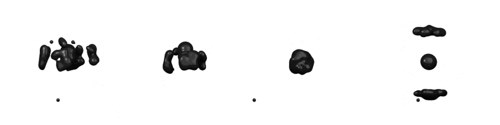
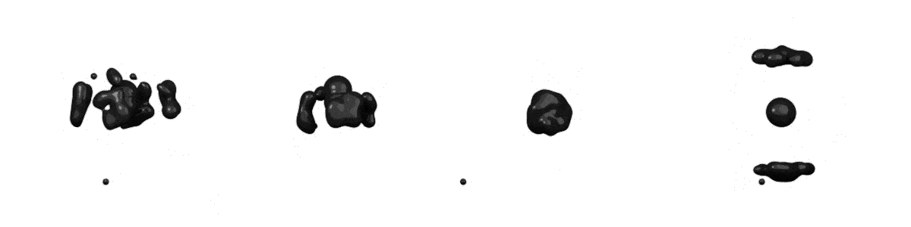

Welcome to anton’s documentation!¶

 

What is Generative design?¶
Generative design is an iterative design exploration process that yields feasible design outcomes based on a set of well-defined constraints and performance objectives, using one or more optimization methodologies. In practice, Topology optimization is used to generate numerous design outcomes by varying its parameters within an interval and the generated outcomes that best meet the performance objectives are filtered and processed further.
What is anton?¶
anton is an open-source generative design framework built on Blender, the open-source 3D creation suite. At its current stage of development, anton uses a density-based topology optimization methodology as a design generator and uses implicit surfaces for mesh generation.